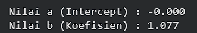
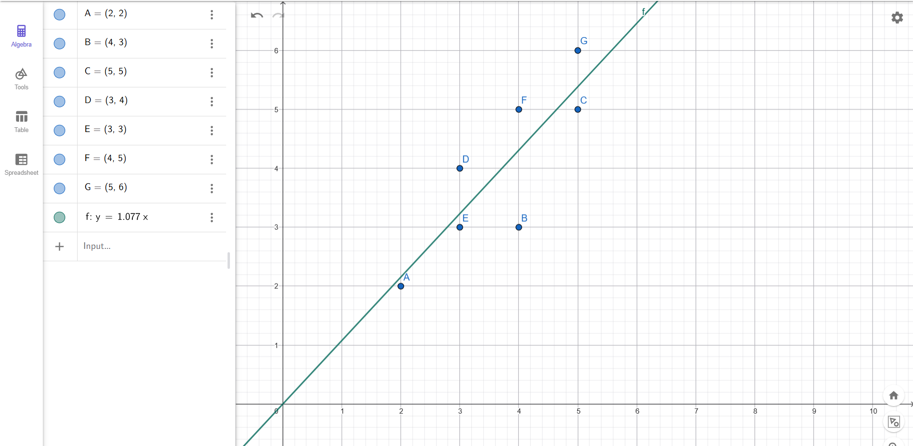

Analisa Data Menggunakan Regresi Linier (A)#
Dataset#
Dataset yang digunakan adalah data titik koordinat dua dimensi yang terdiri dari variabel independen (X) dan variabel dependen (Y).
Dataset ini memiliki 7 baris data dan 2 fitur utama (X dan Y).
Berikut seluruh data titik koordinat beserta keterangannya:
Titik |
X (Variabel Independen) |
Y (Variabel Dependen) |
|---|---|---|
A |
2 |
2 |
B |
4 |
3 |
C |
5 |
5 |
D |
3 |
4 |
E |
3 |
3 |
F |
4 |
5 |
G |
5 |
6 |
Berikut ringkasan statistik dari total (sum) dataset untuk keperluan perhitungan:
\(\Sigma X\) = 26
\(\Sigma Y\) = 28
\(\Sigma X^2\) = 104
\(\Sigma XY\) = 112
\(n\) = 7
Transformasi Data#
Dataset ini seluruhnya bertipe numerik sederhana sehingga tidak memerlukan proses encoding kategorikal, normalisasi, atau standarisasi yang kompleks. Transformasi yang dilakukan hanyalah pemisahan data menjadi dua bagian utama:
Variabel Independen (X): Titik pada sumbu X yang akan digunakan sebagai fitur prediktor.
Variabel Dependen (Y): Titik pada sumbu Y yang akan digunakan sebagai target atau label.
Perhitungan Analitik (Manual)#
Untuk menghitung koefisien regresi secara analitik, kita menggunakan metode Ordinary Least Squares (OLS). Berdasarkan rumus regresi linier sederhana, kita mencari nilai koefisien arah/slope (\(b\)) dan konstanta/intercept (\(a\)).
1. Menghitung Nilai b (Koefisien Regresi)
2. Menghitung Nilai a (Intercept)
Persamaan Regresi Linier: Berdasarkan perhitungan analitik, didapatkan persamaan garis regresi: \(Y = 1.077X\)
Implementasi Python (Scikit-Learn)#
Selain perhitungan manual, analisis juga dilakukan dengan membuat program Python menggunakan library scikit-learn untuk membuktikan hasil analitik secara komputasi. Model yang digunakan adalah LinearRegression.
Alur Kode Python#
import pandas as pd
from sklearn.linear_model import LinearRegression
# 1. Menyiapkan Data
data = {
'X': [2, 4, 5, 3, 3, 4, 5],
'Y': [2, 3, 5, 4, 3, 5, 6]
}
df = pd.DataFrame(data)
# Memisahkan fitur dan target
X = df[['X']]
y = df['Y']
# 2. Inisialisasi dan Pelatihan Model
model = LinearRegression()
model.fit(X, y)
# 3. Ekstraksi Nilai Koefisien dan Intercept
a = model.intercept_
b = model.coef_[0]
# Menampilkan hasil
print(f"Nilai a (Intercept) : {a:.3f}")
print(f"Nilai b (Koefisien) : {b:.3f}")
print(f"Persamaan Regresi : Y = {a:.3f} + {b:.3f}X")

Implementasi Geogebra#
hasil dari analisis menggunakan library python jika di running di app Geogebra akan menghasilkan plot titik koordinat seperti:

Kesimpulan#
Berdasarkan analisis data menggunakan Regresi Linier terhadap 7 titik koordinat (A-G), dapat ditarik kesimpulan sebagai berikut:
Kesesuaian Metode: Terdapat kecocokan 100% antara perhitungan koefisien regresi secara analitik (manual) dengan komputasi menggunakan program Python (library
scikit-learn). Keduanya menghasilkan nilai koefisien arah/slope (\(b\)) sebesar 1.077 dan nilai intercept (\(a\)) sebesar 0.Persamaan Regresi: Model matematis linier terbaik yang merepresentasikan hubungan antara variabel independen (X) dan dependen (Y) pada dataset ini adalah \(Y = 1.077X\).
Pembuktian Visual: Visualisasi model prediksi melalui perangkat lunak GeoGebra secara visual membuktikan bahwa garis \(Y = 1.077X\) ditarik membelah sebaran titik-titik data secara optimal dan proporsional. Hal ini sejalan dengan prinsip metode Ordinary Least Squares (OLS), yaitu meminimalkan jarak kesalahan atau error/residual antara garis prediksi dengan titik koordinat aktualnya.